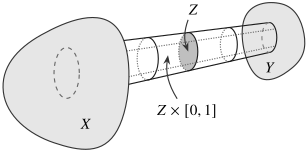
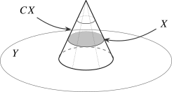
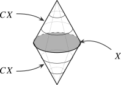

Ordinary pushouts and pullbacks are among the most basic constructions one performs on spaces: think of gluing two spaces along a common subspace, or of the fiber of a fiber bundle over a point. For homotopy theory, however, they have a fundamental defect: they are not automatically homotopy invariant, in that two diagrams of spaces related by homotopy equivalences may have pushouts, or pullbacks, that are not homotopy equivalent.
Example 2.1.1. Given two maps \(f\colon Z \to X\) and \(g\colon Z \to Y\) of topological spaces, recall that the pushout in \(\Top \) is given by the quotient space \[ X \sqcup _Z Y := (X \sqcup Y) / \sim , \qquadtext { where } f(z) \sim g(z) \text { for all } z \in Z. \] If we let \(D^n\) denote the \(n\)-dimensional disk, and let \(S^{n-1} \hookrightarrow D^n\) denote its boundary, then we have the following two pushout squares in \(\Top \):
These two diagrams are homotopy equivalent, by contractibility of the disk \(D^n\), yet their pushouts \(S^n\) and \(*\) are not homotopy equivalent for \(n \geq 1\).
Example 2.1.2. Given two continuous maps \(f\colon X \to Z\) and \(g\colon Y \to Z\), their pullback \(X \times _Z Y\) is given by the subspace \[ X \times _Z Y := \{(x,y) \in X \times Y \mid f(x) = g(y)\} \; \subseteq \; X \times Y. \] To see that pullbacks are not homotopy invariant, suppose that \(Z\) is a topological space and \(p\colon [0,1] \to Z\) a path whose endpoints \(z_0 := p(0)\) and \(z_1 := p(1)\) differ, and consider the following two pullback squares in \(\Top \):
These two diagrams are homotopy equivalent, since the maps \(z_0,z_1\colon * \to Z\) are homotopic via \(p\), yet their pullbacks \(*\) and \(\emptyset \) are not homotopy equivalent (there is not even a map \(* \to \emptyset \)).
We may get around the lack of homotopy invariance of pushouts and pullbacks by replacing them by their homotopy invariant analogues, called homotopy pushouts and homotopy pullbacks. For the convenience of the reader we recall their definitions.
Definition 2.1.3. Consider maps \(f\colon Z \to X\) and \(g\colon Z \to Y\) of topological spaces. Their homotopy pushout \(X \sqcup _Z^h Y\) (or double mapping cylinder) is defined as \begin {align*} X \sqcup _Z^h Y \quad &:= \quad X \sqcup _Z (Z \times [0,1]) \sqcup _Z Y, \end {align*}
where the right-hand side is the quotient of \(X \sqcup (Z \times [0,1]) \sqcup Y\) by the equivalence relation generated by \((z,0) \sim f(z)\) and \((z,1) \sim g(z)\) for all \(z \in Z\). We denote by \(\iota _X\colon X \hookrightarrow X \sqcup _Z^h Y\) and \(\iota _Y\colon Y \hookrightarrow X \sqcup _Z^h Y\) the canonical inclusions. There is also a canonical homotopy \[ H_{\can }\colon \iota _X \circ f \sim \iota _Y \circ g, \] represented by the map \(Z \times [0,1] \to X \sqcup _Z^h Y\) sending \((z,t)\) to \([(z,t)]\).
This construction aligns with the Fundamental Principle: rather than forcing a strict equality \(f(z)=g(z)\) for all \(z \in Z\), like in the strict pushout, it instead introduces a path \(f(z) \rightsquigarrow g(z)\) witnessing their identification up to homotopy. As a result, \(X \sqcup _Z^h Y\) classifies homotopy commutative squares: continuous maps from \(X \sqcup _Z^h Y\) into some other space \(T\) are given by two maps \(t\colon X \to T\) and \(s\colon Y \to T\) together with a homotopy \(H\colon t \circ f \sim s \circ g\):
The homotopy pushout \(X \sqcup _Z^h Y\) is illustrated in Figure 2.1.

Exercise 2.1.4. Show that the homotopy type of \(X \sqcup _Z^h Y\) depends only on the homotopy types of \(X, Y, Z\) and the homotopy classes of \(f, g\). In more detail, consider a homotopy commutative diagram of topological spaces and continuous maps of the form
where \(H\colon \alpha \circ f \sim f' \circ \gamma \) and \(K\colon \beta \circ g \sim g' \circ \gamma \) are homotopies. Construct a map \(\alpha \sqcup _{\gamma }^h \beta \colon X \sqcup _Z^h Y \to X' \sqcup _{Z'}^h Y'\), and show it is a homotopy equivalence whenever \(\alpha \), \(\beta \) and \(\gamma \) are homotopy equivalences.
A proof is given in the supplementary material.
Let us mention the two most important examples of homotopy pushouts, whose \(\infty \)-categorical incarnations will recur throughout the entire book:
- For a continuous map \(f\colon X \to Y\), we define its (unreduced) homotopy cofiber \(C(f)\) as the homotopy pushout of \(f\) with \(X \to *\). As a special case, we have the cone \(C(X) := C(\id _X)\) of a topological space \(X\).
- For a topological space \(X\), we define its (unreduced) suspension \(SX\) as the homotopy pushout of \(X \to *\) with \(X \to *\).
Both are illustrated in Figure 2.2.


Remark 2.1.5. In practice, we will most be interested in the reduced variants of each of these constructions: if \(X\), \(Y\) and \(Z\) are pointed topological spaces and \(f\) and \(g\) preserve the basepoints, then the reduced homotopy pushout is the quotient of \(X \sqcup _Z^h Y\) in which we demand that \((z_0,t) \simeq (z_0,0)\) for all \(t \in [0,1]\), where \(z_0 \in Z\) is the basepoint of \(Z\). The reduced form of the homotopy cofiber and suspension are denoted by \(\widetilde {C}(f)\) and \(\Sigma X\), respectively.
The definition of homotopy pullbacks is dual.
Definition 2.1.6. Consider maps \(f\colon X \to Z\) and \(g\colon Y \to Z\) of topological spaces. We define their homotopy pullback \(X \times _Z^h Y\) as the subspace of the product \(X \times Z^{[0,1]} \times Y\) given as \begin {align*} X \times _Z^h Y \quad &:= \quad \{(x,p,y) \in X \times Z^{[0,1]} \times Y \mid p(0) = f(x), p(1) = g(y)\}. \end {align*}
Here \(Z^{[0,1]} = \Map ([0,1], Z)\) is the space of paths in \(Z\) with the compact-open topology, which in this case is completely determined by the requirement that a map \(T \to Z^{[0,1]}\) is continuous if and only if the curried map \(T \times [0,1] \to Z\) is continuous.
Again, note how the homotopy pullback adheres to the spirit of the Fundamental Principle: for a point in the homotopy pullback, we do not require \(f(x)\) and \(g(y)\) to be strictly equal; instead, we require the additional data of a path \(p\) from \(f(x)\) to \(g(y)\) that expresses that these points are ‘equal up to homotopy’. As a result, a map \(T \to X \times _Z^h Y\) into the homotopy pullback corresponds to a pair of maps \(T \to X\) and \(T \to Y\) together with a homotopy between the two composites \(T \to Z\):
Exercise 2.1.7. Formulate and prove the homotopy invariance of homotopy pullbacks, dual to Exercise 2.1.4.
Two important examples of homotopy pullbacks:
- Given a map \(f\colon X \to Y\), the homotopy fiber of \(f\) at a point \(y \in Y\) is the homotopy pullback of \(f\) along the map \(y\colon * \to Y\). Its elements consist of a point \(x \in X\) equipped with a path \(p\colon f(x) \rightsquigarrow y\).
- The loop space \(\Omega X\) of a pointed space \((X,x)\) is the homotopy pullback of the map \(x\colon * \to X\) along itself. Its elements are \(x\)-centered loops \(p\colon x \rightsquigarrow x\).
While the homotopy invariance of homotopy pushouts and pullbacks ensures that the problems illustrated by Example 2.1.1 and Example 2.1.2 do not occur, it is not immediately clear that the localization functor \(\Pi _{\infty }\colon \Top \to \An \) turns homotopy pushouts and pullbacks into \(\infty \)-categorical pushouts and pullbacks. In the next section, we provide the tools to tackle this problem.
Generated from the authoritative LaTeX source.